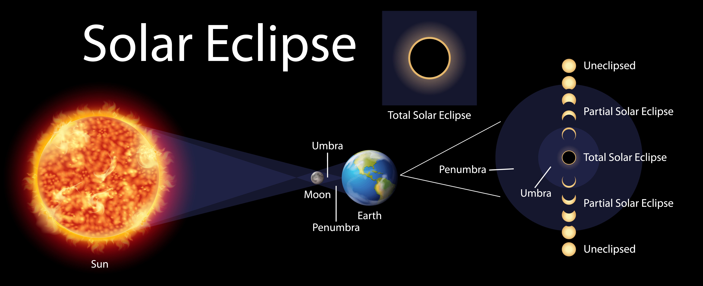
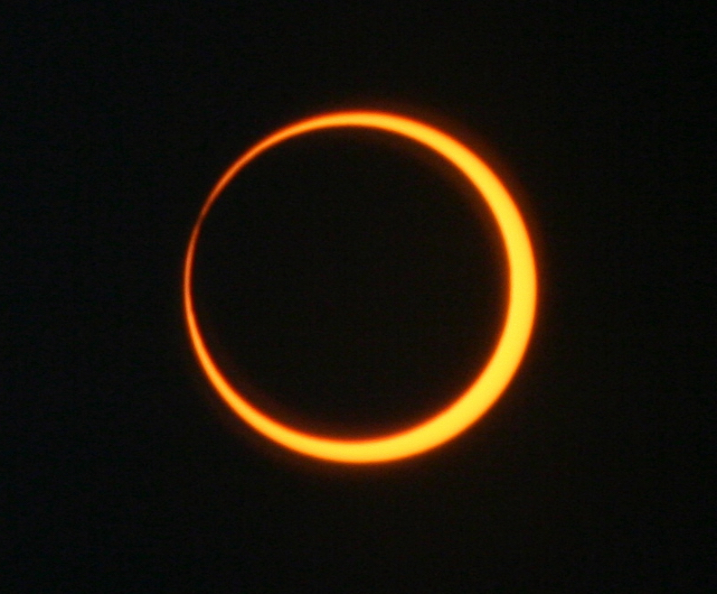
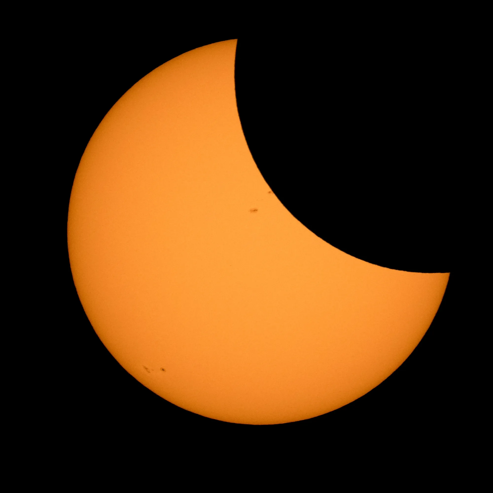

Solar Eclipse

There are four types of Solar eclipses
1.Total Solar Eclipse:

A total solar eclipse happens when the moon completely blocks the face of the sun. During a total solar eclipse, the Moon moves directly in front of the Sun and barely. A total solar eclipse is the only type of solar eclipse where viewers can momentarily remove their eclipse glasses (which are not the same as regular sunglasses) for the brief period of time when the Moon is completely blocking the Sun. covers the solar disk,the visible, circular surface of the Sun as seen from Earth.
2.Annular Solar Eclipse:

An annular solar eclipse happens when the Moon passes between the Sun and Earth, but when it is at or near its farthest point from Earth. Because the Moon is farther away from Earth, it appears smaller than the Sun and does not completely cover the Sun. As a result, the Moon appears as a dark disk on top of a larger, bright disk, creating what looks like a ring around the Moon.
3. Partial Solar Eclipse

A partial solar eclipse happens when the Moon passes between the Sun and Earth but the Sun, Moon, and Earth are not perfectly lined up. Only a part of the Sun will appear to be covered.
4.Hybrid Solar Eclipse
Because Earth's surface is curved, sometimes an eclipse can shift between annular and total as the Moon’s shadow moves across the globe. This is called a hybrid solar eclipse.
A hybrid eclipse appears as either a total or an annular eclipse, depending on the observer’s location.
Note: Except for a specific and brief period of time during a total solar eclipse, you must never look directly at the Sun without proper eye protection, such as safe solar viewing glasses (eclipse glasses). Eclipse glasses are NOT the same as regular sunglasses; regular sunglasses are not safe for viewing the Sun